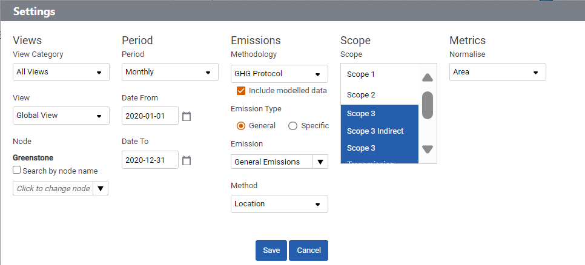

The grey settings bar is available throughout SPMs dashboards. Selecting the settings bar allows you to adjust the configuration of your dashboard, and highlight the data points important to you. The fields which you can filter against are outlined below.
Your organization will have given you access to analyze the parts of your organization that are relevant to you, indicated by the ‘View Category’ and ‘View’ options available. For example, a view may have access to your organization’s entire structure or more specific reporting units such as: sites, regions, countries, business units or divisions. Here you can select which view you wish to analyze, whilst the ‘Node’ allows you to select a specific location or other grouping of nodes. As data is recorded in a hierarchy, your node selection will allow you to view everything below that point in the hierarchy.
The ‘Period’ you select determines the grouping of emissions over time, e.g. daily, weekly, monthly, quarterly, annually. ‘Monthly’ allows you to view 12 consecutive months; ‘Quarterly’ allows you to view 8 consecutive quarters; and ‘Years’ allows you to view 5 consecutive years. ‘Rolling Year/Quarter’ enables the viewing of data on a rolling i.e. non calendar year time period basis from the first date you input. The date range can be set manually by typing in the dates, or you can click on the calendar icon to select a date.
‘Methodology’ refers to the calculation methodology used by SPM to calculate emissions e.g. GHG Protocol for global emissions and framework specific methodologies such as CRC.
‘Include modelled data’ allows the user to select whether modelled energy data is displayed on the Energy Dashboards. This option is only available if modelling has been set up for this organization.
‘Emission’ enables the user to select a single emission source category to analyze, such as ‘Electricity’. Many of the categories break down into sub-types which you can also select; an example of this is ‘Transport’, which can be broken down to ‘Business’, ‘Commuter’, and ‘Freight’.
‘Emission Type’ provides the ability to toggle between viewing your ‘General’ emissions and a sub-set ‘Specific’, which will display ICT related electricity emissions as a portion of the total electricity emissions.
The ‘Scope’ section allows you to view a selection of scopes depending on what you wish to analyze, to select more than one selects the scopes you want while depressing the CTRL key on your keyboard.
‘Metric’ selection gives you the ability to ‘Normalize’ emissions by a defined unit, for example by number of employees, or area of office floor space. Your organization may have also added company or location specific metrics. If you do not want to view normalization data or have not reported any select ‘None’.